Tư Liệu Ảnh Về Hào Nước Và Pháo Đài

 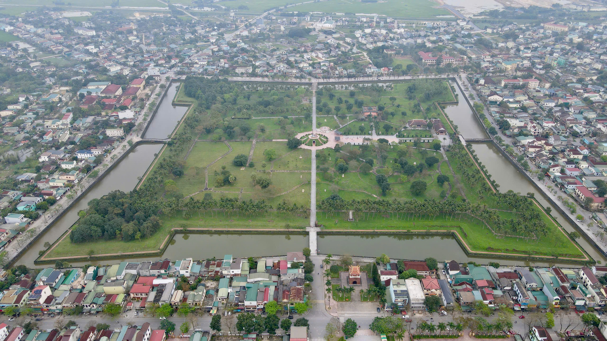
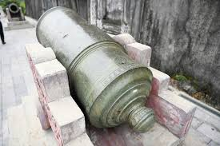
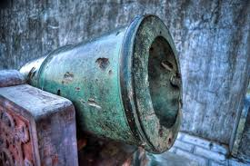
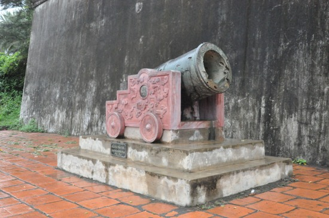
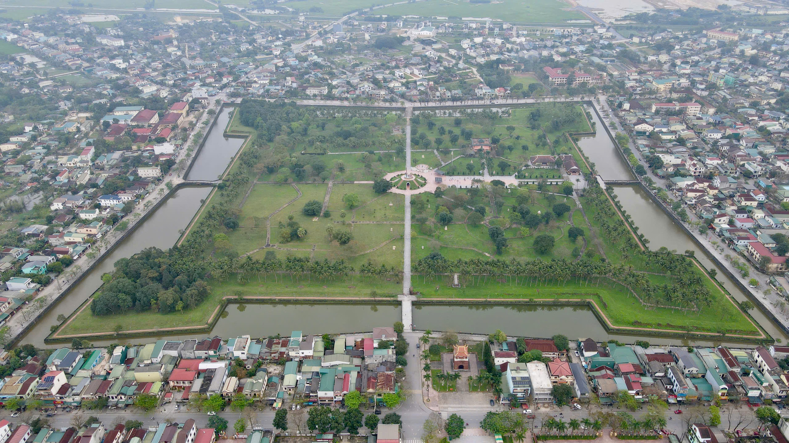
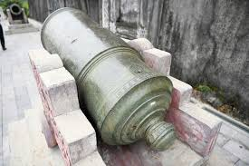
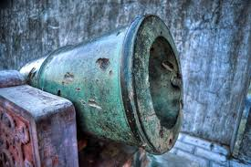
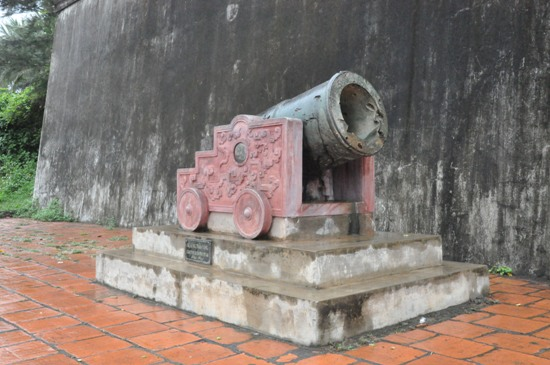
Nguồn ảnh: sovaba.travel, quangbinhtravel.vn, tienphong.vn, tiepthisaigon.com.vn
-Hào nước là một phần quan trọng trong hệ thống phòng thủ của Thành cổ Quảng Trị, được xây dựng theo phong cách Vauban (phòng thủ châu Âu) để bảo vệ thành khỏi các cuộc tấn công. Hào được đào xung quanh bốn mặt thành, kết nối với sông Thạch Hãn để duy trì mực nước và thoát nước mưa.
-Vị trí: Bao quanh toàn bộ bốn mặt tường thành, với một đường hói (kênh thoát nước) được đào từ góc đông bắc nối trực tiếp ra sông Thạch Hãn (cách thành khoảng 200m về phía nam). Hệ thống hào được mở rộng năm 1837 dưới thời Minh Mạng, nối thẳng ra sông để điều tiết nước.
-Kích thước và thiết kế: Hào có chiều sâu khoảng 3-3,4m, rộng khoảng 8 trượng (khoảng 26-32m, tùy theo đơn vị đo thời Nguyễn), với bờ ngoài thẳng đứng và bờ trong chéo hình chữ V để tăng cường phòng thủ (khó leo lên). Chiều dài hào từ mép ngoài đến bờ sông Thạch Hãn khoảng 250m ở một số đoạn. Trước mỗi cổng thành có cầu vòm (cầu cuốn) bắc qua hào, làm từ gạch và đá, có thể rút lên để phòng thủ.
-Chức năng: Không chỉ là rào cản vật lý chống xâm nhập, hào còn giúp điều tiết nước mưa, ngăn lũ và cung cấp nước phòng thủ. Trong chiến tranh, hào trở thành hào chiến đấu, nơi quân lính ẩn náu và phản công.
-Lịch sử: Xây dựng ban đầu năm 1809 dưới triều Gia Long, hoàn thiện kiên cố năm 1837 dưới Minh Mạng. Trong Chiến tranh Việt Nam, đặc biệt trận 81 ngày đêm 1972, hào bị bom đạn phá hủy một phần nhưng vẫn là yếu tố quan trọng trong phòng thủ. Sau chiến tranh, hào bị lấp một số đoạn do đô thị hóa.
-Hiện nay: Được trùng tu và phục dựng từ thập niên 1990, hào vẫn tồn tại xung quanh thành với nước đầy, trở thành yếu tố cảnh quan du lịch và chứng tích lịch sử. Một số đoạn được bảo tồn nguyên gốc với vết tích chiến tranh.
-Pháo đài là các công trình nhô ra ở bốn góc thành, được thiết kế để tăng cường khả năng phòng thủ, cho phép bắn chéo và bao quát toàn bộ tường thành theo mô hình Vauban.
-Vị trí: Bốn pháo đài nằm ở bốn góc thành: đông nam, đông bắc, tây nam, tây bắc. Chúng nhô ra ngoài tường thành, tạo thành các "góc bầu" hoặc pháo đài góc.
-Kích thước và thiết kế: Mỗi pháo đài có hình thoi hoặc bán nguyệt, xây bằng gạch nung kiên cố, với tường cao tương đương tường thành (hơn 4m), dày chân hơn 12m. Trên pháo đài có "pháo nhãn" (lỗ châu mai) để đặt súng thần công, cho phép bắn chéo hỗ trợ lẫn nhau.
-Chức năng: Tăng cường phòng thủ bằng cách kiểm soát các hướng tấn công, bắn chéo để bảo vệ tường thành và cổng. Trong thời Nguyễn, dùng để đặt pháo binh; trong chiến tranh hiện đại, trở thành vị trí chiến lược cho lính phòng thủ.
-Lịch sử: Xây dựng năm 1837 dưới Minh Mạng như một phần của hệ thống phòng thủ hoàn thiện. Trong trận 81 ngày đêm 1972, các pháo đài bị bom đạn tàn phá nặng, nhưng vẫn là điểm kháng cự quan trọng. Thời Pháp thuộc và Việt Nam Cộng hòa, được sử dụng làm doanh trại quân sự.
-Hiện nay: Được phục dựng từ những năm 1990, các pháo đài vẫn tồn tại với vết tích chiến tranh (lỗ đạn, hư hỏng), trở thành điểm tham quan du lịch và tưởng niệm lịch sử.
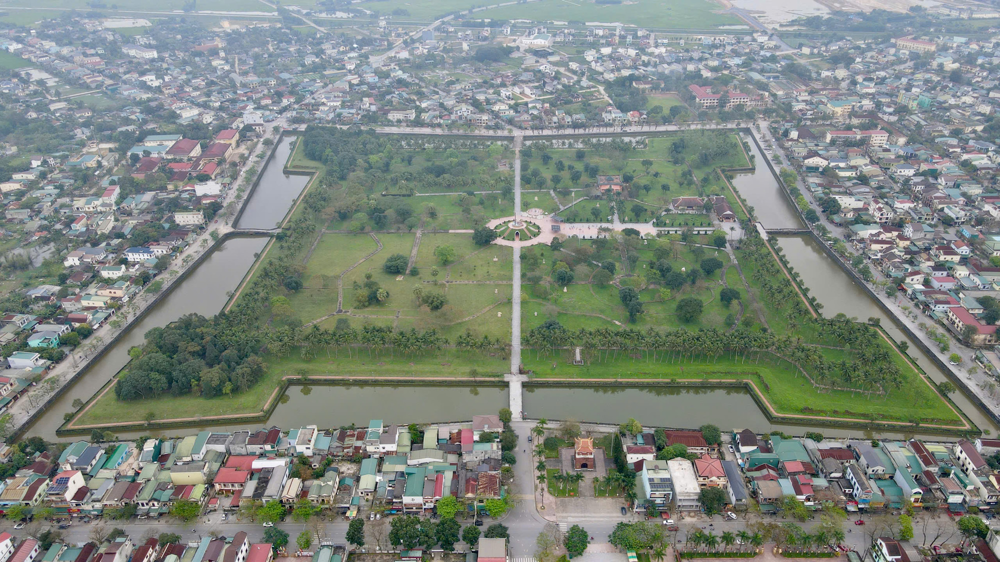
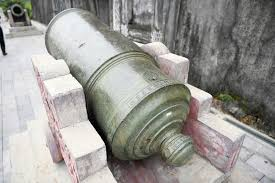
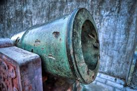
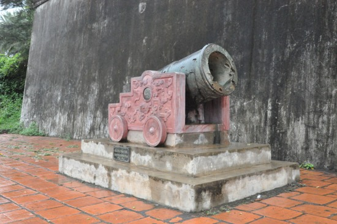
Nguồn ảnh: sovaba.travel, quangbinhtravel.vn, tienphong.vn, tiepthisaigon.com.vn